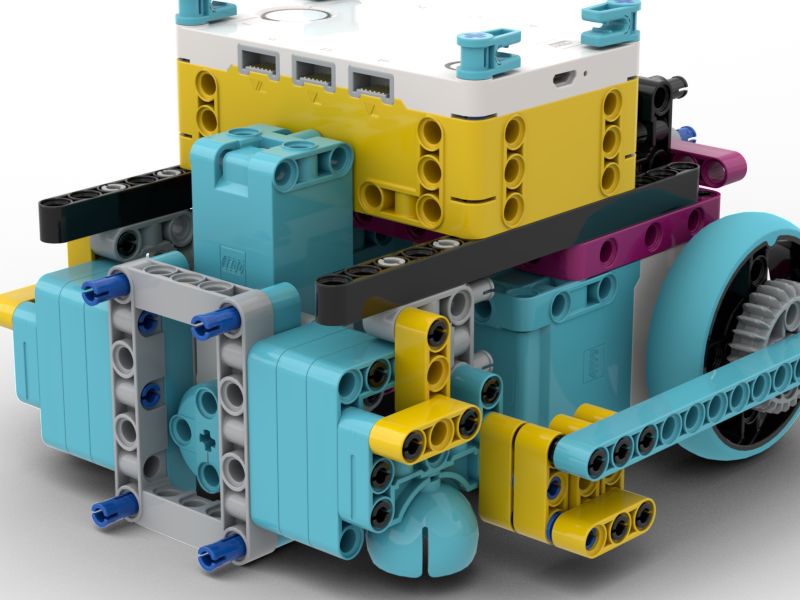
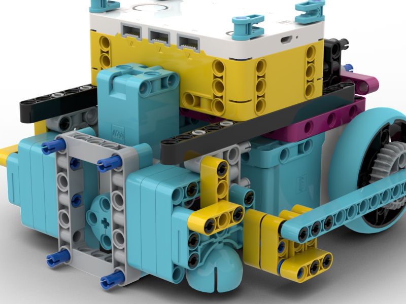
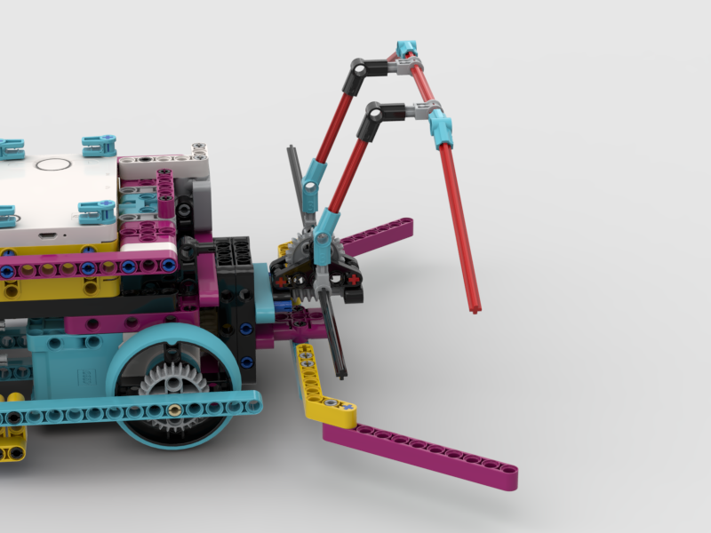
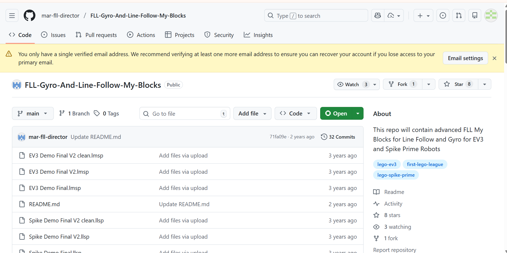

Design Evolution & Iteration

Our robot design started by identifying problems from last season. Previously, our robot used two attachment motors—one in the front and one in the back—but this setup was unstable and inefficient.
The rear motor sat at a different height, and swapping attachments often pulled off the front plate. Over the summer, we redesigned our robot using an iterative process.
Last Year's Motor Setup Issues
 

Front and back motors at different heights created instability and made attachment swaps difficult.
Motor Placement Iterations

We tested different motor placements and orientations using BrickLink Studio, which allowed us to make adjustments without taking the physical robot apart.
CAD Design: BrickLink Studio
BrickLink Studio Model

Digital CAD model allowing us to test designs virtually before building
Pinless Attachment System
Attachment Mechanism

Gravity-drop attachments that fit securely without pins, allowing for quick swaps
Attachment in Action
.gif)
Demonstrating the quick-swap mechanism with gravity-drop attachment
Before & After: Design Evolution
Last Year's Robot
Unstable dual-motor setup with rear motor at different height
This Year's Robot
Optimized flat front motors with pinless, gravity-drop attachments
Mission Strategy & Brainstorming
Student Brainstorming & Drawings
Once the game was released, we focused on mission strategy using the Seven Rules of Brainstorming: deferring judgment, encouraging wild ideas, building on each other's thoughts, staying focused, aiming for quantity, welcoming all voices, and documenting everything.
💡 Brainstorming by the Numbers: Each of our 4 team members generated 4 unique ideas for all 15 missions—resulting in 240 total ideas to analyze and refine!
Mission Analysis & Sorting
Each team member sketched solutions for missions and robot paths. We analyzed missions by action type, field location, difficulty, and points, which helped us group missions that fit together naturally.
This allowed us to design attachments that could complete multiple tasks in a single run, prioritizing consistent and repeatable performance over attempting every mission.
Project Management & Workflow
Run Groupings

After analyzing missions by action type, field location, difficulty, and points, we grouped them into strategic runs labeled A through E. This grouping allowed us to design attachments that could complete multiple missions efficiently in a single run.
We didn't assign a final order right away, which gave us flexibility to adjust our strategy as testing progressed and we learned which runs were most reliable.
Team Duos & Side Assignments

This structure allowed us to work in parallel, maximize practice time, and develop specialized expertise for our assigned missions. Duos collaborated on shared challenges while maintaining ownership of their specific runs.
Three Session Method

Mission Runs: Design & Execution
Explore each mission run in detail, including design iterations, attachment evolution, and challenges we overcame.
Run A: Missions 1 & 2
Missions: Mission 1, Mission 2
Points Target: 60 points
Iteration 1: Initial Design
Approach: We started with a basic arm mechanism to complete the first mission.
Challenges: The attachment was too heavy and caused the robot to drift during navigation. Alignment with mission models was inconsistent.
.png)
Iteration 2: Lightened Design
Improvements: Redesigned the attachment using fewer parts and a more compact structure.
Results: Improved stability, but still had issues with precise positioning for Mission 2.

Iteration 3: Final Solution
Solution: Added a passive guide rail to help align with mission models. Optimized motor speeds and added PID corrections.
Outcome: Achieved 95% success rate in practice. Consistently scores 75 points in this run.
Run B: Missions 3 & 4
Missions: Mission 3, Mission 4
Points Target: 70 points
Iteration 1: Dual-Action Attachment
Approach: Designed a single attachment to complete both missions using one motor.
Challenges: The mechanism was complex and prone to jamming. Timing between actions was difficult to calibrate.

Iteration 2: Simplified Mechanism
Solution: Split the actions into two separate movements with a pause between them. Added sensor feedback to confirm completion.
Outcome: Reliable performance with 90% success rate. Quick attachment swap makes this run efficient.
Run C: Missions 12, 13 & 11
Missions: Mission 12, Mission 13, Mission 11
Points Target: 90 points

Iteration 1: Triple Mission Attempt
Approach: Ambitious design to complete three missions in one run.
Challenges: Path was too complex, increasing failure points. Robot occasionally missed alignment marks.

Iteration 2: Path Optimization
Improvements: Redesigned the path to reduce turns and improve flow. Added intermediate alignment points.
Results: Better consistency, but Mission 8 still had reliability issues.
Iteration 3: Final Refinement
Solution: Fine-tuned PID values for each segment. Added a passive attachment that automatically engages during the run.
Outcome: Our highest-scoring run with excellent reliability. Key to our competition strategy.
Run D: Missions 9 & 10
Missions: Mission 9, Mission 10
Points Target: 60 points
Iteration 1: Precision Challenge
Approach: Required extremely precise positioning for small mission models.
Challenges: Even minor drift caused mission failure. Battery level affected motor performance significantly.
Iteration 2: Enhanced Precision
Solution: Implemented battery voltage compensation in code. Added physical alignment guides to the attachment.
Outcome: Reliable execution even with varying battery levels. Consistent 60-point contribution.
Run E: Missions 5, 6 & 7
Missions: Mission 5, Mission 6, Mission 7
Points Target: 90 points
.png)
Iteration 1: Speed vs. Accuracy
Approach: Attempted to complete missions quickly to maximize remaining time.
Challenges: Higher speeds reduced accuracy. Occasional overshooting caused mission failures.
Iteration 2: Balanced Approach
Solution: Implemented variable speed control—faster on long straights, slower near mission models. Added deceleration ramps.
Outcome: Maintains good speed while ensuring accuracy. Completes in under 30 seconds with high reliability.
Mechanical Context & Programming Focus
.png)
We faced many mechanical challenges early in the season. Lessons from last year—especially about passive attachments—strongly influenced this year's robot.
By combining two powered motors with passive mechanisms, one motor could complete one task, the second another, and a passive attachment a third—making it realistic to complete three missions in one run.
While mechanical challenges were significant, programming ultimately became our biggest focus.
Programming Evolution, PID, & Improvement
To improve consistency, we switched from block coding to Pybricks, which allows a much higher number of control loop iterations. We use the gyro sensor for heading, motor encoders for distance, and degree-based motor control.

We tested various Kp and Kd values to optimize drive performance. Our best results came from Kp=1.15 and Kd=0.02, which provided minimal drift across different speeds and distances.
PID Tuning Results
Kp Tuning (Heading Error in Degrees)
Kd Tuning (Heading Error in Degrees)
Drive Straight Function
def drive_straight(distance_mm, speed, kp=1.15, kd=0.02):
robot.reset_gyro()
robot.reset_encoders()
while robot.get_distance() < distance_mm:
error = robot.get_heading()
correction = (kp * error) + (kd * (error - prev_error))
left_power = speed - correction
right_power = speed + correction
robot.set_motors(left_power, right_power)
prev_error = error
robot.stop()Turn Function
def turn(degrees, speed, kp=1.0):
robot.reset_gyro()
while abs(robot.get_heading()) < abs(degrees):
error = degrees - robot.get_heading()
power = kp * error
robot.set_motors(power, -power)
robot.stop()Our drive-straight code uses PID-style corrections with optimized values: Kp=1.15 and Kd=0.02. These values emerged from systematic testing across different speeds and distances.
The result is repeatable and reliable performance, even under varying loads and battery levels. We also manage our code using GitHub for collaboration and version control.
Version Control with GitHub
Why We Use GitHub
GitHub allows our team to collaborate on code safely. Each team member can work on different runs or features without overwriting others' work.
We use branches for experimental changes and commits to track our progress. This means if something breaks, we can roll back to a working version.
Benefits for Our Team
- Collaboration: Multiple programmers can work simultaneously
- History: Every change is documented with commit messages
- Backup: Code is safely stored in the cloud
- Testing: We can experiment without breaking working code
- Learning: We review each other's code and learn better practices
GitHub in Action
We organize runs, attachments, and PID tuning experiments with clear commit history and pull requests.
Coopertition & Shared Learning
Our coach maintains a shared student folder where teams from Manhattan, Queens, and Hudson Valley upload robot designs, attachments, code, and videos.

During our redesign, we studied Manhattan Team 69309’s robot and used it as a starting framework. After sharing our redesign, they later improved their robot using our ideas.
This back-and-forth demonstrates true coopertition—learning from and contributing to the community.
Summary & Reflection
Our robot reflects a complete design cycle: identifying problems, brainstorming, testing, and iterating. By combining strong mechanical design, precise programming, and effective teamwork, we built a robot that is reliable, efficient, and repeatable.
This process allowed us to overcome challenges from last year, improve our drive-straight performance, and consistently complete more missions during competition.